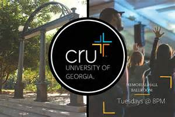
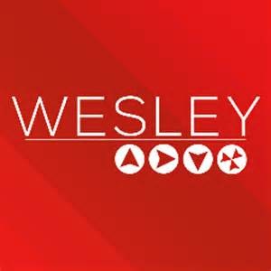

| GEOG 1101 | GEOG 1125 | ENGL 1101 | CSCI 1100 | FYOS |
|---|---|---|---|---|
| Human Geography: People, Places, and Cultures | Resources, Society, and the Environment | English Composition I | Topics in Computing | First-Year Odyssey Seminar |
| Global patterns of resources, population, culture, and economic systems. Factors contributing to these patterns and distinctions between the technologically advanced and less advanced regions of the world. | Interactions between physical systems and human activities, and their effects on environmental quality and sustainability. Geography of population and resource consumption, food production, water and air quality, energy policy, land/biotic resource management. | Expository themes on both general and literary topics developed by basic rhetorical methods. | Fundamental concepts of computing and information science and their application to everyday computer use. Topics include data representation, addressing and mapping, network protocols, standards, data exchange, encryption and security, mathematical modeling, and data modeling. Hands-on labs emphasize problem-solving using software to collect and analyze data, and evaluate and present results. | A seminar to engage first-year students in the academic culture of the University. Seminars will promote meaningful academic dialogue between students and faculty in a small class setting that encourages reflective thinking and learning to learn. Varied topics based on faculty scholarship. Exploration of the unique learning environment at UGA, including opportunities to engage in research, public service, and varied forms of instruction both on campus and globally. |
I attend this class every Tuesday and Thursday from 9:30-10:45. It is a lecture style class taught by Prof. Lowery Parker. This class fulfills my physical science requirement and is a fairly easy introductory course. The workload includes:
|
I attend this class every Tuesday and Thursday from 12:30-1:45. It is a lecture style class taught by Prof. Nik Heynen. This class fulfills one of my world language and culture requirements and is a very easy introductory course. The workload includes:
|
I attend this class every Tuesday and Thursday from 3:30-4:45. It is a smaller class taught by Renee Buesking. This class fulfills my first english requirement and is a fairly easy introductory course. The workload includes:
|
I attend this class every Monday and Wednesday from 2:30-3:20, and then I have a lab on Fridays from 10:10-12:05. It is a lecture style class taught by Prof. Hamid Arabnia. This class fulfills a Terry College requirement and is a fairly easy introductory course. The workload includes:
|
I attend this class every Monday from 1:25-2:15. It is a small class taught by Prof. Kathy Thompson and Prof. Janet Rechtman. This class fulfills my FYOS requirement and is a super easy introductory course. This class is focussed on service learning and getting involved on campus and within the community. The workload includes
|
|  |  |
|---|---|
With Cru my involvement began even before I came to college. I was contacted over the summer and informed that Cru was looking for musicians. I play the drums so I thought that this would be an awesome opportunity to me continue with that after high school. Once I arrived here I had a short audition and became a member of the Cru Worship Team. Other than playing drums in the band I have gotten involved in a small group that meets once a week and is led by older guys. Here we discuss things in further detail for the upcomming weekly meeting, which is on Tuesdays at 8:00pm in the Memorial Hall Ballroom. Cru offers many outreach programs that stem from here on campus to around the world through the Summer Mission program. As I go throughout my college carrer I plan on continuing my involvement with Cru and experiencing all they have to offer. |
My involvement in Wesley is not nearly as extensive as in Cru, but it is something that I am a part of and that I enjoy. Wesley at UGA offers a program on Monday nights at 8:00pm called Freshley, which is a service geared directly toward Freshmen. Here we sing a few songs at the beginning and then listen to a short message. After the message we break off into small groups much like the one at Cru to discuss the message in further detail. |
Next I will explain some of my hobbies. These are things I do outside of class, Cru, and Wesley, that I do mainly for my personal enjoyment.
|
|
|
Hope you enjoyed my webpage!!!
Go Dawgs!!!!!